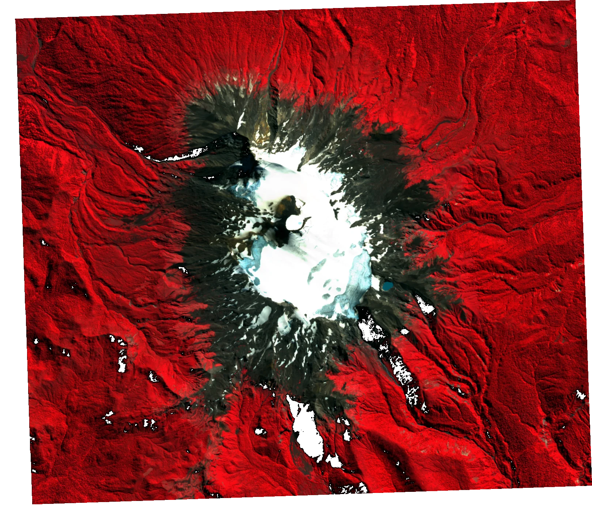

No fue posible iniciar el mapa interactivo. La información del área de estudio sigue disponible.
TRAZABILIDAD
Base documental: Informe final — Mocho 2025–2026, versión final, sección 1.1, Figura 1 y Tabla 1 (páginas impresas 3–4).
Primera entrega del atlas: área de estudio. Referencias históricas de clima: temperatura media anual de 2,6 °C y precipitación anual aproximada de 4.000 mm (Schaefer et al., 2017, citado en sección 1.1).